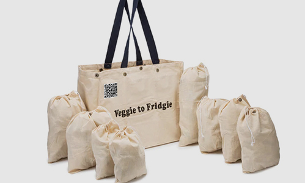

ECO App is a manufacturer and marketer of eco-friendly products for everyday use. The products, that are aimed at replacing plastic products, are sold through its e-commerce platform. Farmer wanted to have a dedicated app to capture the feedback of its customers, which in turn will be used for improving the existing products as well as aid in new product development.